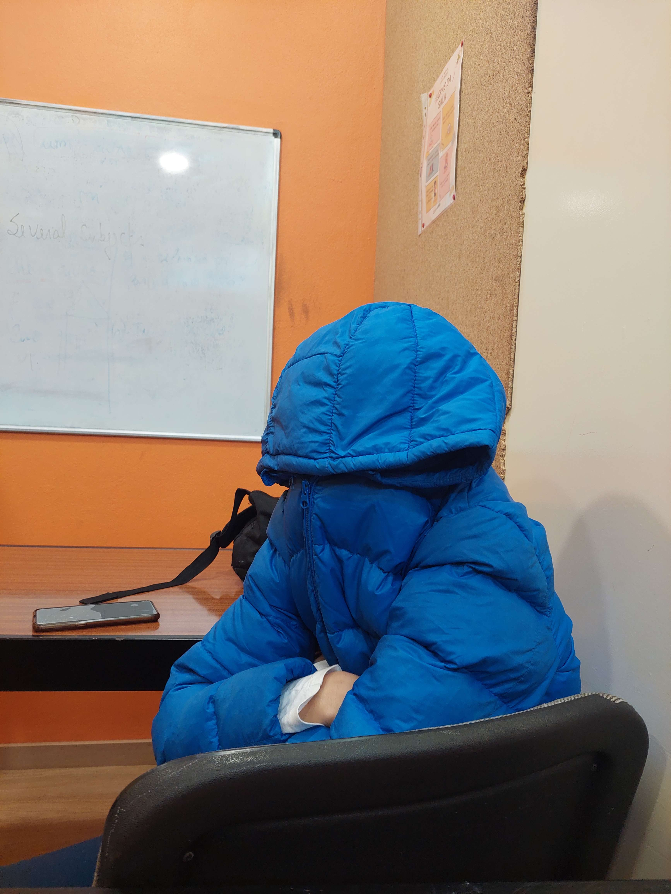

Coisas que stressam o Helder:
 -O Helder
-Hora da aula de matemática
-Dizer que ele esta muito stressado
-João Moreira
-Medicação para dormir
-Perder em um jogo
-Ficar PRESO em um jogo
-A Iara
-Cosegas
-Spoilers
-Existência do joao moreira v2
-Também a existência do João mangalhão
-O João Mangalhão ligar ao Helder e depois desligar na cara
-Galinha a andar debaixo de agua
-Cringidade
-Pessoas a ligar-lhe
-Pessoas e a existência do mundo